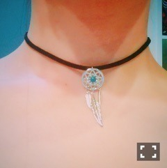

| 2016/06 22 Wed | 斎藤ちはる 小さい頃の、夢。(´>∀<｀)ゝ |
ちはるーむへようこそ(﹡ˆ ˆ﹡)
あやねちゃ〜ん♡
東北のライブ期間と、じょしらく期間で
大分あやねちゃんとの距離が縮まったんだ(﹡ˆ ˆ﹡)
この前なんて、あやねちゃん〜！って呼んだら
私に向かって投げキッスしてきたんだよ！！？
あのあやねちゃんが！！！
ものすごく嬉しかったけど、ものすごく照れた...
この写真の私、すごく楽しそう。笑
-------------------------♡
最近新しいチョーカーを手に入れたよ♪
ひとつめ。
なんか飲み物がメインになりつつあるけど、
チョーカーに注目してみて〜！笑
(とぼけた顔でごめんね。)
(見にくくてごめんね。)
このチョーカーは、タトゥーチョーカーって言って多分1番使い易いと思う！
カジュアルなファッションとか、
Tシャツとかラフなスタイルとか、
首にぴったりするから首つまってるトップスでも少し上の方で付けれるし、オススメ！
しかもなんとこのチョーカー、
アクセサリーショップを最近開いた高校の同級生の子から買ったものなんだよ\( ˆoˆ )/
アクセサリーショップ開いたよ〜っていうのを聞いて、
すぐにサイトチェックしたら可愛いのたくさんあったからすぐに注文したの。
そしたらその子に
「初めてのお客さんだったよ♡」
って言われて凄くびっくりした！
私でごめんっていう申し訳ない気持ちもありつつ、記念すべき1人目のお客になれた事が嬉しかった。
それにしても私の行動が俊敏すぎる。笑
このチョーカー、ヘビロテすることになりそうです♡
ふたつめ。

今までに持ってない、ボヘミアンテイストのチョーカー！
この夏はボヘミアンが流行りそうだから
いいスパイスになりそうな予感〜
真ん中のターコイズがお気に入り。
ターコイズーのリングー♪あーあー
夏だね。
みっつめ。
眉毛下がりすぎ。。
写真撮るとどうしても眉毛が下がってしまう癖をどうにかしたいよ。。
そんなことより！
紫のチョーカーは初めて〜
セーラームーンが大好きだから、
セーラームーンっぽくて買っちゃいました♪
女の子らしい格好に付けようと思ってるよ！
最近のラインナップでした〜！！
今回はちょっとバラエティ豊か。
な、気がする。自分では。
実は私の小さい頃の夢は、ファッションデザイナーだったんです！！
よく落書きでデザイン描いてたな〜
たいしたデザインではないけども。。
小さい頃と言っても、小学生くらいまで。
中学に入ったらデザイナーとはいかないまでも、ファッションに関わるお仕事をしてみたいと考えていました。
だからオシャレする事が大好きだし、
色んなジャンルのお洋服が好きだし、
雑誌を読むのも好きだし、
モデルさんを見るのも好きだし、
ファッション系の記事があればすぐ読むし、
ウィンドウショッピングも好きだし、
街行く人のファッションを見て参考にしたり、
トレンドがあれば取り入れたいと思うし、
でも着まわしするのも大好きだし。
何よりこうして自分からファッションについて発信できる場があるのが嬉しい！！楽しい！！大好き！！
乃木坂に入って
衣装で可愛い服を着れたりとか、
生写真撮影でたくさんの服から自分で選ぶことができたりとか、
雑誌等の撮影で衣装を用意していただいて、こういう服今度着てみようかなっていう新しい発見とか、
オシャレなメンバーがたくさんいるから参考にしてみたりとか、
毎日が刺激になっているし
毎日が楽しいです！
お洋服って第一印象でとても大切だと思うし
多くを語らずとも、自分を表現できる最大の場所だと思うし
人間の三大要素が衣食住と言われているくらい生きていく上で必要なものだから、
せっかくなら自分の好きなもの、ときめくものに囲まれて過ごしていたいんだ！
こうして書いてると
ファッション大好きなんだな〜って
自分でも改めて実感。
また昔みたいにデザイン描いてみようかな。
ただの自己満になりそうだけど。、
いつかそんな小さい頃の夢が
何かしらの形で叶うといいな、と密かに願っています。
ファッション愛について語ったところで！！
今日はこのへんで...
おやすみ♪
斎藤ちはる